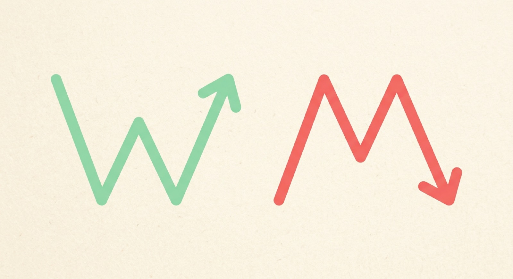

Shapes the Crowd Draws
Patterns are repeatable shapes
A pattern is a shape a crowd keeps drawing on a chart. Some flip the trend (reversal). Some just pause it, then keep going (continuation).
Reversal
The trend flips
A double bottom (that W) hints a fall is turning into a rise. A double top (the M) warns a rise may be turning into a drop.
Continuation
The trend rests, then runs
A flag is a tight little pause right after a big move, like the stock catching its breath before it keeps going the same way.


A breakout is price finally punching through a ceiling it was stuck under.
When price breaks a level it had been rejected at before, traders watch to see if the crowd follows through. A break with a big crowd behind it means more than a quiet one.